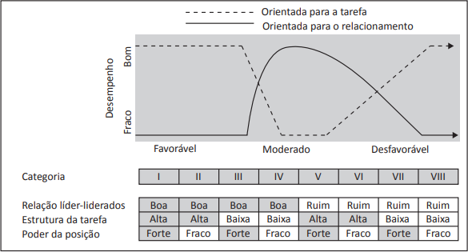

O executivo que assumiu a operação brasileira de uma montadora de automóveis foi incumbido de uma tarefa muito difícil: fazer com que a divisão crescesse e voltasse a dar lucros. Com um estilo de gestão próprio, o executivo conseguiu reestruturar a empresa e assumiu um desafio ainda maior, tornando-se presidente da montadora na América Latina. Diante desse sucesso, o executivo foi considerado a pessoa ideal para conduzir reestruturações organizacionais e foi contratado por outra grande empresa para comandar uma revolução na sua estrutura.
Em uma empresa de engenharia, a confiança entre os funcionários, seus pares e seus chefes é considerada um fator-chave para o sucesso organizacional. O capital humano é visto como o maior ativo da empresa, e o compartilhamento de informações e o trabalho em equipe são fundamentais para que os projetos alcancem bons resultados.
A figura a seguir apresenta o modelo de liderança contingencial de Fiedler.
ROBBINS, S. P.; JUDGE, T. A.; SOBRAL, F. Comportamento Organizacional. 14. Ed. São Paulo: Pearson Prentice Hall, 2010, p. 363 (adaptado).
Com base na análise dos casos e no modelo de liderança apresentados, avalie as afirmações a seguir.
É correto o que se afirma em